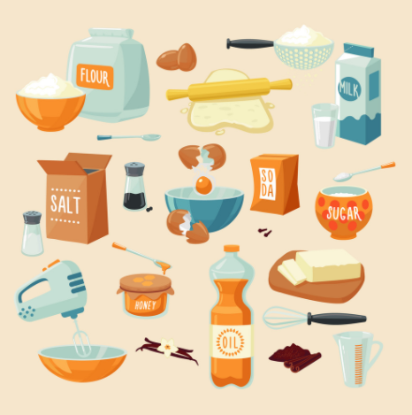
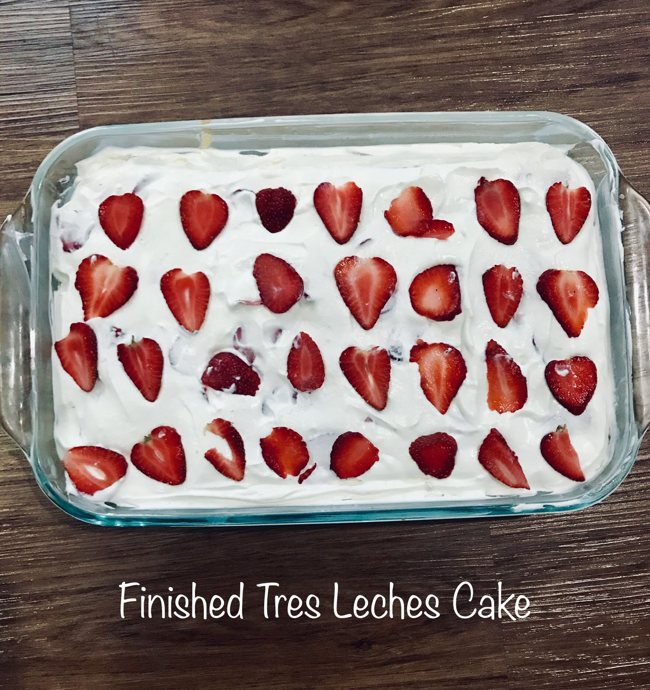
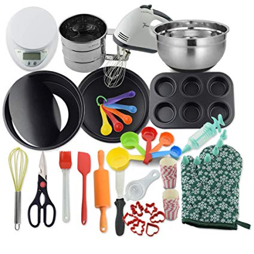

Baking
I love to bake, I have been baking since I was 7. My favorite thing I have ever baked were my lemon bars because they were so fun and tasty to make. They required me to do multiple steps and use a variety of ingredients and tools. I have also made bread, cake, cupcakes, brownies, pie, and many more. Including Indian desserts. By baking so often, I have collected many important tools and ingredients that most people don't have. I also loved it so much that I did that for my IB MYP project.
|  |  |  |
|---|